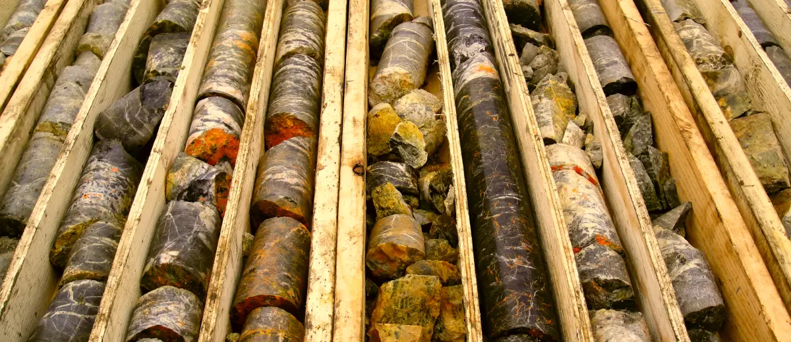

Услуги
К услугамБурение инженерно-геологических скважин
От 18 000₽ / опыт
-
Описание услуги
- Прежде чем начинать строительство площадных объектов, к которым относят здания и сооружения вне зависимости от их назначения, или же линейных объектов (ЛЭП, автомобильных и железных дорог, трубопроводов) необходимо изучить территорию, предназначенную для будущего строительства.
- Наиболее детальную информацию о внутреннем строении участка специалисты получают, основываясь на данных бурения. Для более глубокого понимания обратимся к определению. Бурение для геологических изысканий — это процесс создания скважин различных параметров (диаметра и глубины), с целью изучения геологического, а так же гидрогеологического строения участка, знание которого является необходимым для проведения успешных и качественных инженерно геологических изысканий. Рассмотрим данную разновидность исследований более подробно.
-
Цели и задачи
- Бурением различных типов инженерно геологических скважин решается множество задач. В первую очередь специалистами определяется не только геологическое строение территории, но и водные (гидрогеологические) условия участка.
- В ходе бурения осуществляется отбор проб грунта для изучения литологического состава пород, их состояния, физических и механических свойств. Изучение свойств грунтов проводится в специализированных грунтовых лабораториях. Относительно принятых стандартов по отобранным образцам керна (цилиндрам выбуренной породы) определяются прочностные и деформационные свойства, пластичность, влажность, текучесть, а так же специальные параметры, используемые для создания расчетных моделей. На этих данных основываются рекомендации по возведению проектируемого сооружения.
- Как часто требуется бурить скважины? Ответ на этот вопрос напрямую зависит от категории сложности геологических условий участка, а так же уровня ответственности сооружения или линейного объекта
-
Типы скважин
- В зависимости от назначения, технологии и цели отбора выбуренного материал (керна), скважины подразделяются на следующие типы:
-
- Разведочные. Целью бурения скважин этого типа является детализированное изучение геологического разреза территории. На основании отбора керна определяют мощности отложений, состав грунтов и пород, их структурно-текстурные особенности.
- Технические. Представляют собой разновидность разведочных скважин. В ходе бурения отбираются пробы, естественное сложение которых не было нарушено. Далее лабораторно определяются их физические и механические свойства.
- Гидрогеологические. Используются для проведения опытных испытаний фильтрационных характеристик отложений водоносного слоя.
- Специального назначения.
- Отбор образцов производится согласно инструкции и принятых стандартов. Как правило, осуществляется сплошной отбор керна, но в некоторых ситуациях керн отбирают через определенные интервалы. По завершению работ скважины ликвидируются согласно инструкции о ликвидации и тампонаже скважин
-
Преимущества
- Качественное проведение буровых работ — это необходимое условие получения подлинной информации о геологическом, а так же гидрогеологическом строении участка. Как следствие, бурение является основой надежного, качественного и оптимального проекта строительства. Именно поэтому обращаться нужно к опытным специалистам.
- К списку наших преимуществ относится применение современных буровых технологий. Как следствие, качество отбираемых образцов заметно возрастает, что позволяет получить наиболее точные результаты в ходе лабораторных исследований.
- За 30 лет работы нами не получено ни одно отрицательное заключение экспертизы и успешно завершено более 1000 проектов. Мы рады использовать накопленный в течение стольких лет опыт и профессиональные знания на благо вашего строительства! Команда специалистов обеспечит выполнение необходимого комплекса работ, соблюдение предварительно составленного плана и сроков по доступной для вас цене. Ознакомьтесь с нашими расценками в разделе прайс. Чтобы рассчитать точную стоимость работ, оставьте заявку, и наши менеджеры свяжутся с вами.